Install Alfresco
1. Add ports 80 and 443 to the App security group by going to the SecGrp tab and clicking on the Make Authorization icon 
For extra security use your client IP address. e.g. 192.66.78.50/0 IP address rather 0.0.0.0/0 which allows all IP addresses access.

2. Enter 80 in both the "From Port" and "To Port" fields and press "save"

3. Do the same for port 443
4. Go to the server tab click on the terminal icon and a PuTTY session will open.
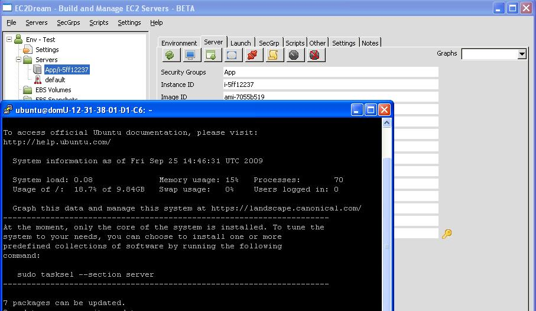
5. Run the Alfresco install script
./Alfresco-1.3.2.3-installer-for-ubuntu.sh
Reply to the questions
a. Enter the DNS Name of your Alfresco Service (i.e.: www.myalfresco.com):
Press ENTER for default one (www.myalfresco.com)
Enter the Elastic IP address setup earlier in section Creating a new Elastic IP or the Public DSN
They are both displayed in the Server tab of EC2Drean
Reply for example - 75.101.999.999
b. Modifying /etc/hosts file. Enter your IP address:
Press ENTER for default one (127.0.1.1)
Once again enter the Elastic IP Address or the Public DSN
c. Please enter the number of your language pack
Press ENTER for default one (language-pack-gnome-es-base)
d. Select OK for the Configuring MySql server
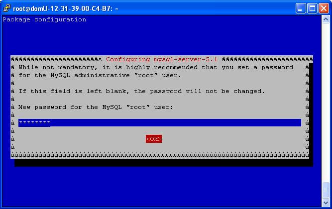
e. Enter a password for the MySql server
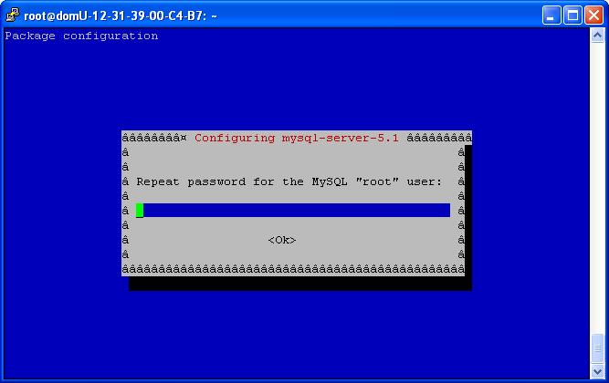
f. Alfresco then instals
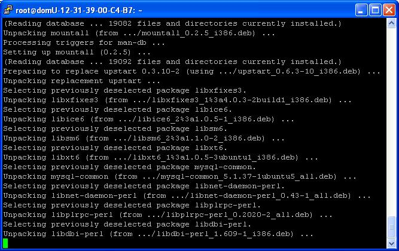
h. Select OK for the Licensing Java
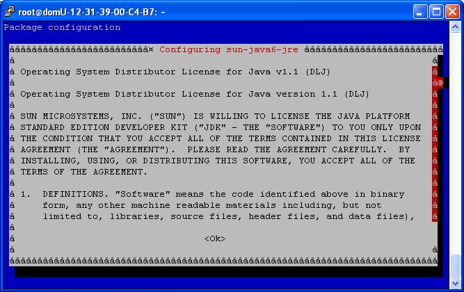
i. Agree Licensing Terms
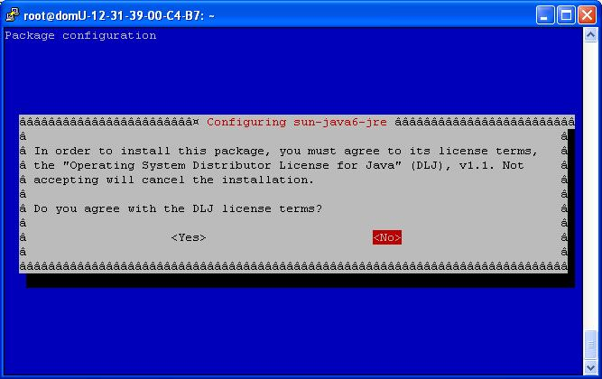
j. Select Yes to configure database
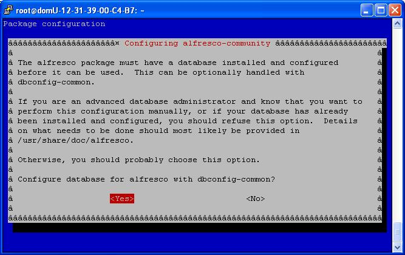
k. Enter MySql admin password
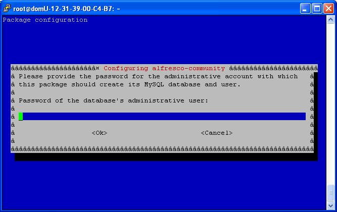
l. Enter Alfresco MySql password
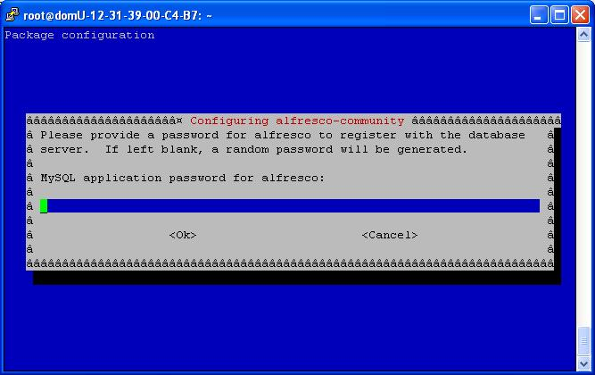
m. Select Yes to update Tomcat Configuration
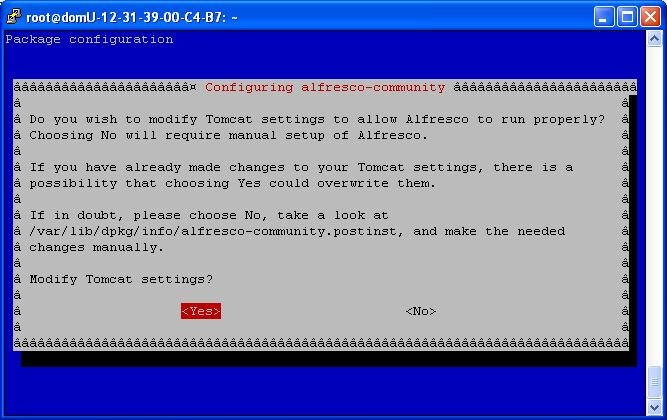
n. Command may disrupt existing ssh connections. Proceed with operation (y|n)?
Reply y
o. If you see error:
dpkg was interrupted, you must manually run 'sudo dpkg --configure -a' to correct the problem.
run the commmands:
sudo dpkg --configure -a
sudo apt-get install apache2 -y
******************
a. Do you want to update your Ubuntu packages? (Y/n):
Reply - n
b. Press ENTER for default one (language-pack-gnome-es-base)
Reply - ENTER
c. Press ENTER for default one (127.0.1.1)
d. Enter DNS name for your URL:
Press ENTER for default one (Alfrescoshop.com)
Reply with the elastic ip address for example - 75.101.999.999
or reply with url if you have the IP configured in a DNS server as a URL - www.mysite.com
e. Reply by pressing Enter to take the defaults for the above questions
Alfresco Admin Username (Default=admin):
Alfresco Admin Password (Default=password):
Alfresco Admin First Name:
Alfresco Admin Last Name:
Alfresco Admin Email Address:
f. Include Sample Data in Alfresco? (Y/n) Press ENTER for default one (Yes)
Reply Enter
Then the software (PHP5, MySQl etc) will be installed. look for any error messages.
This will takle 5 to 10 minutes.
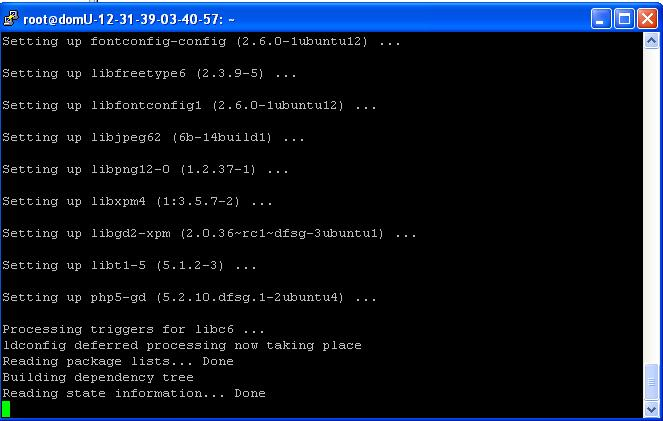
g. Reply with a password for the MySQL database
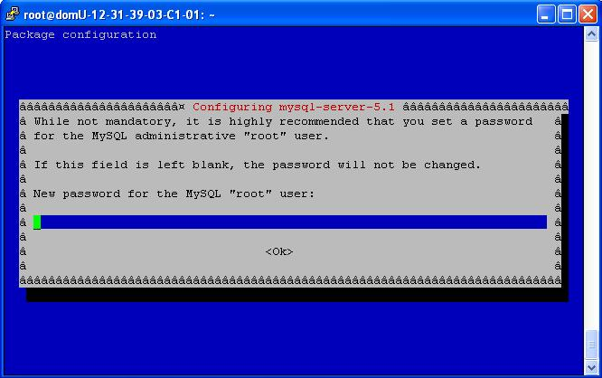
h. ---------------------------------------------------------------------
Enter again your MySQL "root" Administrator Password:
---------------------------------------------------------------------
Reply with the root password
i. Command may disrupt existing ssh connections. Proceed with operation (y|n)?
Reply y
6. In a browser go to the Elastic IP/Alfresco from the server tab of EC2Dream and go through the Alfresco Configuration.
eg: http://75.101.999.999/Alfresco
a. Agree to terms and conditions and press continue.

b. Press Continue on Localization.

c. Change database to Alfrescodb, enter the password of the MySql database and press continue.

d. Create an admin user and press continue.

e. Now everything is configured. Press "Go to Front End" to test.

f. It you get an SQL error:

then delete all the files under /var/cache

g. Retest by pressing "Go to Front End" to test and you should have a working Demo Store.